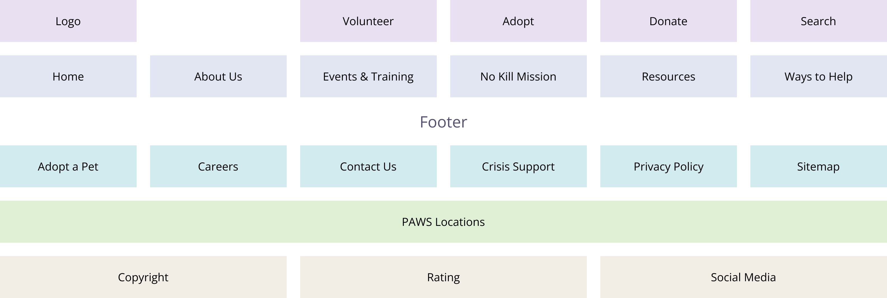

The current PAWS Chicago (“PAWS”) website lacks a streamlined design. It hinders potential adopters, donators, and volunteers from seamlessly engaging with PAWS Chicago's website and fulfilling their mission.
Redesign the website to highlight the PAWS mission
Make Volunteering and Adoption a focal point of the website
Enhance color scheme to make the website accessible to all while maintaining consistency
As user researchers, our goal was to comprehend the specific information users seek when navigating the PAWS Chicago website, ensuring the provision of clear and relevant content for a pleasant user experience.
In this research project, we planned and conducted 9 interviews with a stakeholder and potential users that were animal lovers or had behaviors/characteristics matching our proto-persona in the Chicago area.
Too many complex levels to the navigation menu
Uninviting and outdated
Stakeholder mentioned that they have a of lack volunteers
The PAWS Chicago Website currently has an analogous color scheme that does not meet most accessibility standards.
It is recommended to adjust the colors to allow for better readability for all viewers including the visually impaired. These changes include providing more contrast and possibly adding an additional secondary color palette to add shade and tone variety.
Julia wants to adopt a dog but she doesn’t think that’s enough. While looking on the PAWS website, she sees that she can volunteer so after she applies to adopt a dog, she also applies to become a volunteer.
Adopt a dog
Find a way to do more for the PAWS organization
Enhance the wellbeing of animals
Highlight volunteering opportunities and volunteering on the site. Create ads for PAWS on various platforms.
After performing card sorting and conducting usability testing, we found that there are too many sublevels to the website. We decided that it is better for users if we simplify and streamline the navigation to only have one primary level.
As user researchers, our goal was to comprehend the specific information users seek when navigating the PAWS Chicago website, ensuring the provision of clear and relevant content for a pleasant user experience.
In this research project, we planned and conducted 9 interviews with a stakeholder and potential users that were animal lovers or had behaviors/characteristics matching our proto-persona in the Chicago area.
Hero Banner is inconsistent with the rest of the site
Font is too small
Centered Typography looks awkward and is hard to read
Buttons, Sizing & Padding are inconsistent
Banners shouldn’t cover images & pictures are pixelated
Carousel card transition needs to be smoother
Navigation was easy to discern
User would prefer the buttons to be above the fold on Ways to Help page
Provide addresses for the volunteer locations
Form alignment and length deters users from proceeding
Large picture on the homepage makes the page look off balance
The volunteer page is wordy
Condense mobile footer
Images in the hero banner appear to be cut off
Content and pictures might benefit from more spacing
Footer looks cluttered
Header and navigation bar are too thick
Option A Pros: Engaging, Adds a personal touch to the locations, gives a brief description and has the address.
“I think the descriptions are just adding words that aren’t necessary”
Option B Pros: Takes up less space, allows user to go directly to page to get the information if they want it.